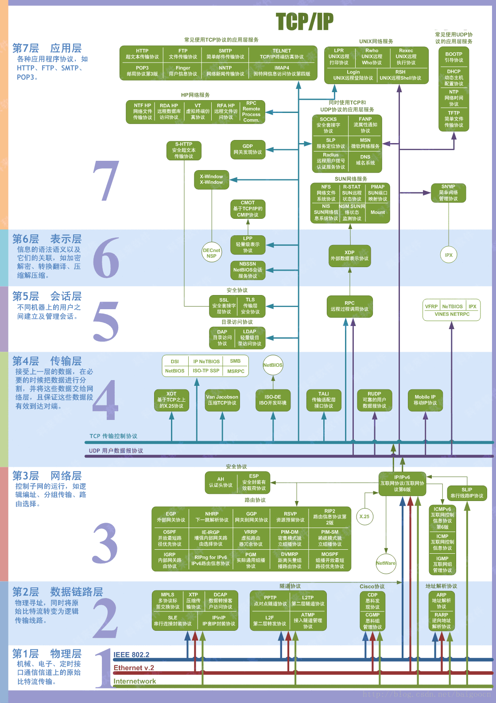
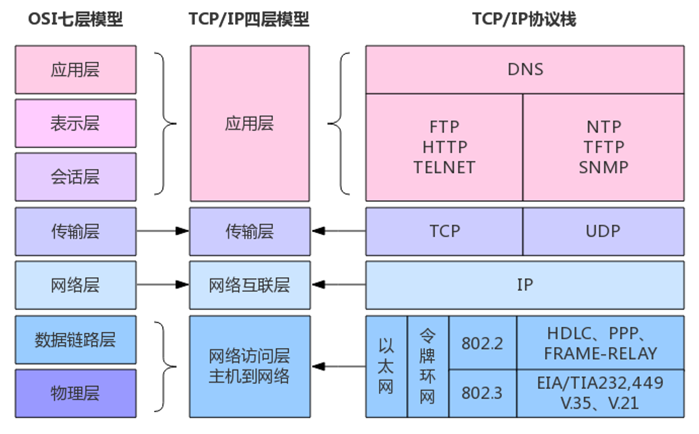

Web Lec 1: 计算机网络基础⚓︎
注
- 如果对这方面的知识感兴趣，
且想要拿一个高绩点，这里强烈安利《无线网络应用》这门选修课。虽然课程安排相当的满（理论 + 实践，从下午上到晚上） ，但如果用心学的话不仅能学到很多 Web 相关知识，也能获得一个令人满意的成绩（笔者为数不多满绩的课程之一） 。 - 个人感觉课上讲的知识有些杂乱，没有梳理好一个较为合理的体系，因此笔者根据自己的理解重新整理了一下笔记（
相信等之后学了 CN 发现现在的笔记有多愚蠢） - 推荐自学资料：MDN Web Docs
网络⚓︎
从 OSI 模型 &TCP/IP 模型分析
这是 OSI 模型：

OSI 模型与 TCP/IP 模型之间的转换：

这里按照 TCP/IP 模型展开：
-
应用层
- 特点：无状态、纯文本，需要用 Cookie 维持状态
- 域名与 DNS
- 域名：顶级域名（.top
） 、二级域名（noughtq.top） 、三级域名（note.noughtq.top）等 - DNS 记录：A(IPv4)、AAAA(IPv6)、CNAME( 别名 )、TXT( 纯文本 )、NS...
- 常用命令
： nslookup（查询 DNS 的命令行工具）
- 域名：顶级域名（.top
- HTTP 协议
- URL：统一资源定位符（人话：网址）
- 状态：Cookie、Session、Token
- Cookie：存储在客户端的小型文本文件，通常用于存储用户的偏好设置、身份验证信息等
- Cookie 劫持
- Session：存储在服务端的临时数据存储区域，通常用于存储用户的会话状态信息
- Cookie：存储在客户端的小型文本文件，通常用于存储用户的偏好设置、身份验证信息等
- HTTP 请求：GET、POST
- HTTP 报文
- HTTP 标头
- HTTPS
- 用好开发者工具
- 代理 (PROXY)
- 正向代理：虚拟专用网络 (VPN)，用于访问内网
- 反向代理：隐藏真实 IP，部署内容分发网络 (CDN)、防火墙，内网渗透
-
传输层
- 特点：端到端
- TCP：面向连接、拥塞控制、字节流服务、确认重传
- UDP：无连接、开销低、自由度高、自己实现方便
- 端口
-
网络层
- IP：IPv4、IPv6（关注它们 IP 地址的特征）
- 网关、子网、NAT（网络地址转换）
- 数据包传输和路由
- 常用命令
： tracert（跟踪数据包从本地到目的地间的网络路径）- 原理——ICMP 报文
-
物理层：
这块归信电管，CS 基本不管
网站⚓︎
其实这块也属于应用层，但由于内容比较多，所以单独列出来了。
- WEB 应用架构：客户端 + 服务端
- 客户端：浏览器
- 可视化：HTML、CSS
- 人机交互逻辑：JS
- 缓存：Cookie
- 安全
- 服务端：一台或多台服务器
- 认证 (authentication) 与授权 (authorization)
- 处理请求
- 各种分工：前端、后端、数据库 ......
- 安全
- 客户端：浏览器
- PHP：最早的开发语言，但是快死了（一坨 bug
） ，简单了解语法即可 - 后端：Web 应用的核心，负责处理业务逻辑、数据存储和安全
- 后端技术栈：Node.js、PHP、Python、Ruby、Go、Rust
- 漏洞：逻辑漏洞、一些错觉、注入漏洞
- SQL（结构化查询语言）——与数据库交互，目前只要了解下面 4 种操作即可（
但大二的时候还要学）- 常用操作
- 增 (create)
CREATE TABLE users (...);INSERT INTO users VALUES (1, 'noughtq', false);
- 删 (delete)
DELETE FROM users WHERE id=1;
- 改 (update)
UPDATE users SET username='qqq' WHERE id=1;
- 查 (retrieve)
SELECT version();SELECT avg(score) FROM students GROUP BY name;SELECT * FROM students;
- 增 (create)
- 常用操作
-
前端：可视化与操作逻辑，主要关注用户界面的设计和交互
- HTML：标记语言，由各种标签嵌套的层级结构，搭好网页的框架
- CSS（层叠样式表
） ：美化网页 - JS(JavaScript)：处理网页的逻辑交互，还可用于后端
- 发展：Node.js、TypeScript
这里就不介绍语法了，想要了解的话看 MDN Web Docs
- 用好开发者工具
-
网络安全
- 任意代码执行 (RCE)
- 文件包含
- 越权、非授权访问
- XSS（跨站脚本攻击）
- CSRF（跨站请求伪造）
- SSRF（服务端请求伪造）
- 跨域
- Dos 攻击、DDos 攻击（分布式拒绝服务攻击）
经典面试题：地址栏输入网址并访问后发生了什么？
- DNS 解析（域名解析
） ：- 浏览器会首先检查本地缓存中是否有该网址对应的 IP 地址。
- 如果没有，它会向 DNS 服务器发送请求，查询该网址的 IP 地址。
- DNS 服务器返回该网址对应的 IP 地址给浏览器。
- 建立 TCP 连接：
- 浏览器使用前面得到的 IP 地址，通过 TCP/IP 协议与目标服务器建立连接。
- 这包括三次握手过程：客户端发送 SYN 包，服务器返回 SYN-ACK 包，客户端再发送 ACK 包确认连接。
- 发送 HTTP 请求：
- 建立连接后，浏览器会发送一个 HTTP 请求到服务器。这个请求包含了请求方法（如 GET 或 POST
） 、请求的资源路径以及一些头信息（如浏览器类型、可接受的文件类型等） 。
- 建立连接后，浏览器会发送一个 HTTP 请求到服务器。这个请求包含了请求方法（如 GET 或 POST
- 服务器处理请求并返回响应：
- 服务器接收到请求后，会处理该请求，查找请求的资源（如 HTML 文件、图片、视频等
） 。 - 服务器会将找到的资源以及一些头信息（如内容类型、内容长度等）打包成 HTTP 响应，返回给浏览器。
- 服务器接收到请求后，会处理该请求，查找请求的资源（如 HTML 文件、图片、视频等
- 浏览器接收响应并渲染页面：
- 浏览器接收到服务器返回的 HTTP 响应后，会解析响应的头信息和内容。
- 如果内容是 HTML 文件，浏览器会解析 HTML 并根据其中的指令（如加载 CSS 文件、执行 JavaScript 脚本等）进行渲染。
- 浏览器会逐步构建 DOM 树和 CSSOM 树，并根据它们生成渲染树，最后将内容绘制到屏幕上。
- 加载资源：
- 如果 HTML 文件中包含了其他资源（如图片、CSS、JavaScript 等
） ，浏览器会根据需要发送额外的 HTTP 请求来加载这些资源。 - 这些资源加载完成后，浏览器会继续渲染页面，更新显示内容。
- 如果 HTML 文件中包含了其他资源（如图片、CSS、JavaScript 等
整个过程通常在短时间内完成，以确保用户能够快速看到网页内容。
评论区
如果大家有什么问题或想法，欢迎在下方留言~